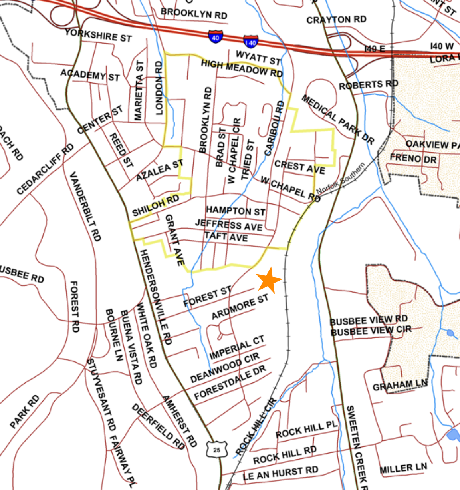
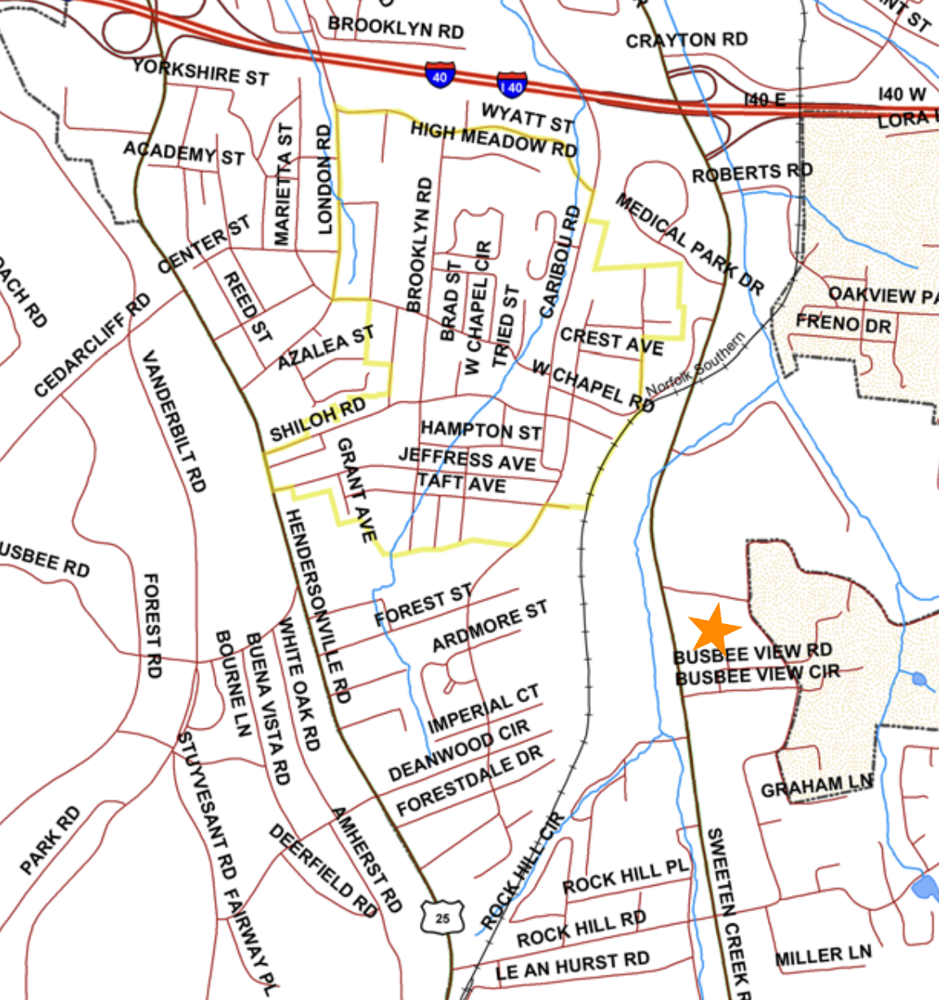

Asheville City Council - May 12th Meeting
May 16, 2026
Here’s what we found to be the most important housing-related items at Asheville’s City Council meeting of Tuesday, May 12, 2026.
A Tale of Two Conditional Zonings
Caribou Commons
Outcome: Denied
Votes:
Unanimous in favor (for denial)
1116 Sweeten Creek Road Apartments
Outcome: Approved
Votes:
Unanimous in favor
One developer brought two conditional zoning requests to Asheville City Council, both of them to be located in South Asheville.
Both of these projects were set to receive subsidy from the federal Low Income Housing Tax Credit (LIHTC) program. As we discussed recently, this means that the homes are guaranteed to accept housing vouchers, and to serve people with incomes at or below 80% of the area median income (AMI). And as we also discussed, to meet the criteria for LIHTC, the homes are set across a spread of income-restriction levels, though the details of this spread typically need to be worked out closer to the project’s completion date.
One of the projects survived the night, and one did not.
Caribou Commons
Caribou Commons didn’t make it. After a lengthy hearing with several neighbors presenting their opposition, the council voted to deny the project, seven to zero.
Caribou Commons was designed to have one hundred homes, all below market rates as discussed above. Notably, the Shiloh neighborhood association came out strongly against it from the beginning, and increased its messaging as the hearing grew closer. Concerns largely centered around traffic worries, and fears that the new apartments would be “out of character.” Residents also argued that Caribou Commons did not meet the goals of the 2025 Shiloh Community Plan, a document that the neighborhood produced in collaboration with the city.
For what it’s worth, following the Asheville Planning and Zoning Commission where the commissioners chose not to recommend the project, Asheville For All decided not to stake an official position on the Caribou Commons. To borrow a slogan from our friends at Strong Towns, we believe that no neighborhood should be exempt from change, and no neighborhood should have to bear dramatic change either. We don’t believe that multifamily housing is necessarily dramatic, whether it’s “middle housing” or something bigger. Nor are we certain that this project was dramatic. But we also understand that as Shiloh is a legacy neighborhood (meaning that it currently or in the past consisted of a majority-minority population), there is a history of mistrust between it and the city, and emotions were running quite high this month. So we didn’t believe that a strong position from us would necessarily be helpful.
That said, we want to point to a couple of points of confusion or complication around this conditional zoning request, if only because they might be worth thinking through given that this is unlikely to be the last multifamily housing to be proposed for South Asheville that requires a City Council vote.
First, much of the stated concern was that the Caribou Commons apartments would only include one ingress/egress, and that this would concentrate traffic in one place. But it’s worth noting that the original plans called for two different entrances. Plans were later changed, it was said, to placate the neighborhood, even though the city’s transportation design standards clearly favor street connectivity.
Needless to say, this kind of wheeling and dealing that seems to be the byproduct of conditional zonings—that is, the politicization of what should be an administrative process—is not ideal, and seems to make things worse. (Especially when it comes to connectivity, as many older property owners prefer the “cul-de-sac” vibes of twentieth century planning.) The fact that neighbors then claimed concern around there only being one entrance may or not have been disingenuous, but it wasn’t helpful.

Second, we think it’s worth noting that for all of the discussion on Tuesday night about the Shiloh neighborhood’s community plan, even though Caribou Commons falls within the borders of a generous definition of the neighborhood’s boundaries, the apartments would actually have been outside of the neighborhood plan’s defined target area.
Neighborhood plans aren’t binding, and as the Asheville Planning and Urban Design staff highlighted last month with respect to this project, they may even include goals that at times conflict with another. Though it’s beyond the scope of this recap, it may be worth thinking about the good and bad aspects of having property owners in specific neighborhoods design their own plans, even if such plans are not binding, when so much about housing policy in Asheville plays out in extra-administrative hearings such as this one, and when any one neighborhood’s housing and land use realities so clearly impact the city and region as a whole.
1116 Sweeten Creek Road Apartments
These proposed apartments would also be in the Shiloh neighborhood, at least according to the most generous definition of the neighborhood’s boundaries. But they’re off to the east of Sweeten Creek Road, and so perhaps everyone agreed that this one was less of a concern in terms of “neighborhood character.”

Asheville City Council approved these apartments unanimously, and with very little discussion. Unlike the previous hearing, there were no residents signed up to express a public comment.
If all goes well for the project, 126 below-market-rate homes will come to South Asheville.
* * *
It feels like we’ve seen an increase of LIHTC-funded (or at least potentially LIHTC-funded) projects before Asheville City Council of late. LIHTC effectively means that federal dollars are being brought into Asheville, in order to support infill development, which means greater demographic diversity and potentially fewer vehicle-miles-traveled for people that have jobs in the city. This is good. But the nature of LIHTC means that it’s likely to be implemented in larger-scale projects, ones that are more often associated with conditional zoning requests. So rather than put up obstacles, our city should welcome these efforts, whenever and wherever it makes sense to do so.
At the same time, we should legalize and incentivize all kinds of different scales of infill housing. As we never tire of saying, doing so across the city will prevent displacement and speculation. It will also spur alternatives to the kinds of housing that older homeowners in particular appear to have negative reactions to. In the end, this may make the idea of an ever-changing, ever-growing city more palatable to Asheville residents, and this is what our city needs to be in order to become more of a home for all kinds of working people and families.